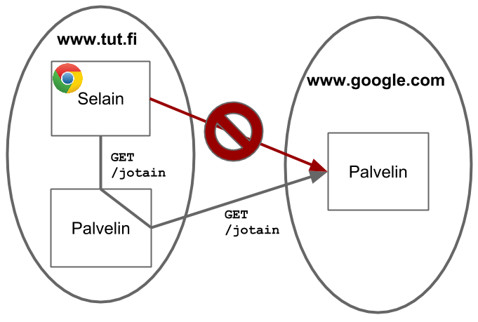

Same-origin policy on web-selaimen tietoturvamekanismi, joka rajoittaa eri originien välistä kommunikaatiota
Origin = protokolla + host + portti
Esim. verrataan URI:a http://www.tut.fi/fi
| URL | Same origin? | Syy |
|---|---|---|
http:/www.tut.fi/en/?x=1 |
Kyllä | |
https:/www.tut.fi |
Ei | Eri protokolla |
http:/www.tut.fi:8000 |
Ei | Eri portti |
http:/wiki.tut.fi |
Ei | Eri host |
Same-origin policy koskee
Same-origin policy ei koske
<script src="http://eriorigin1.com/skript.js"></script>
<link rel="http://eriorigin2.com/style.css"></script>
<img src="http://eriorigin3.com/kuva.png"></script>Web-sivun JavaScript-koodi saa käsitellä vain samasta originista ladattujen sivujen DOM:ia
Esim. sivulla https://www.tut.fi/fi oleva seuraavanlainen uuden
selainikkunan avaava ja sitä muokkaava JavaScript-koodi onnistuu:
var w = open("http://www.tut.fi");
// Kun sivu on latautunut...
w.document.body.innerHTML = "<h1>Moi</h1>";var w = open("http://www.google.fi");
// Kun sivu on latautunut...
w.document.body.innerHTML = "<h1>Moi</h1>";> SecurityError: Blocked a frame with origin "http://www.tut.fi"
from accessing a cross-origin frame.Oletuksena Ajax-kutsuja voi tehdä vain samaan originiin
Esim. originissa http://www.tut.fi suoritettava seuraava Ajax-pyyntö
ei onnistu
$.get('http://google.com/');> XMLHttpRequest cannot load http://google.com/.
No 'Access-Control-Allow-Origin' header is present on the requested
resource. Origin 'http://www.tut.fi' is therefore not allowed access.HUOM: tämä pyyntö kävi kuitenkin google.com:n palvelimella asti
Same-origin policy ei estä viestin lähetystä, vain vastauksen lukemisen
Usein on kuitenkin tarvetta tehdä HTTP-pyyntöjä selaimesta muihin origineihin
Tähän on useita tapoja. Esim:
Kaksi jälkimmäistä vaatii yhteistyötä siltä palvelimelta, josta resurssi haetaan

function jokuFunktio(data) {
// Dataa vastaanotettu...
}
$(document.body).append('<script src=' +
'"http://eriorigin.fi/dataa.js' +
'?callback=jokuFunktio"></script>');http://eriorigin.fi/dataa.js?callback=jokuFunktio vastaa
lähettämällä JavaScript-tiedoston joka kutsuu callback-parametrina annettua
funktiotajokuFunktio({jotain: "dataa"});Cross-Origin Resource Sharing (CORS) on tapa, jolla HTTP-palvelin voi eksplisiittisesti sallia toisesta originista tulevia pyyntöjä
Esim. Ajax-pyyntö
http://www.tut.fihttp://eri.comPyynnössä otsikko
Origin: http://www.tut.fihttp://eri.com:n vastauksessaAccess-Control-Allow-Origin: http://www.tut.fihttp://www.tut.fi -sivun lukea vastauksen dataCORS:n näkökulmasta on kahdenlaisia HTTP-pyyntöjä
Yksinkertaiset pyynnöt
GET, HEAD tai POSTPalvelin voi hyväksyä yksinkertaisen pyynnön palauttamalla vastauksen jossa on otsikkotieto
Access-Control-Allow-Origin: <pyynnön Origin>tai
Access-Control-Allow-Origin: *CORS:n ei-yksinkertaisille pyynnöille pitää tehdä preflight-vaihe
Siinä lähetetään ensin OPTIONS-pyyntö, jossa kysytään lupaa ei-yksinkertaisen
pyynnön suoritukseen
OPTIONS /resurssi HTTP/1.1
Host: eriorigin.com
...
Origin: http://www.tut.fi
Access-Control-Request-Methods: PUT, DELETE
Access-Control-Request-Headers: Content-Type, X-Foo, X-BarHTTP/1.1 200 OK
...
Access-Control-Allow-Origin: http://www.tut.fi
Access-Control-Allow-Methods: PUT, DELETE
Access-Control-Allow-Headers: Content-Type, X-Foo, X-Bar